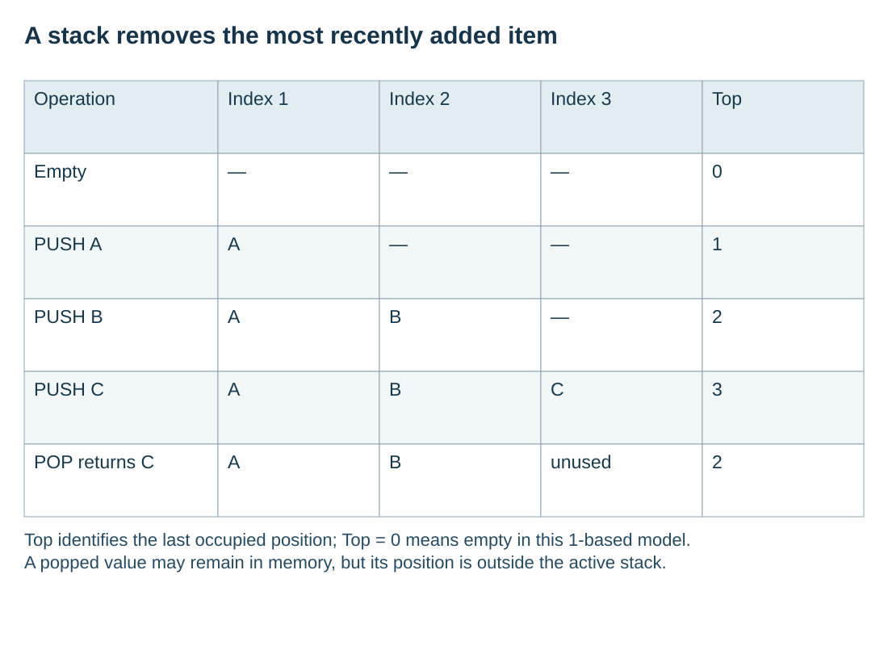

Use LIFO for nested or reversible work
Visual overview
A stack removes the most recently added item

Visual transcript
- Operation: Empty; Index 1: —; Index 2: —; Index 3: —; Top: 0.
- Operation: PUSH A; Index 1: A; Index 2: —; Index 3: —; Top: 1.
- Operation: PUSH B; Index 1: A; Index 2: B; Index 3: —; Top: 2.
- Operation: PUSH C; Index 1: A; Index 2: B; Index 3: C; Top: 3.
- Operation: POP returns C; Index 1: A; Index 2: B; Index 3: unused; Top: 2.
- Top identifies the last occupied position; Top = 0 means empty in this 1-based model.
- A popped value may remain in memory, but its position is outside the active stack.
Remove the latest remaining item
A stack is a last-in, first-out structure. PUSH adds an item at the top; POP removes and returns the top item. A peek operation, if provided, reads the top item without removing it. Items below the top wait until the items above them have been removed.
Match the order to the application
Undo history and nested subroutine calls fit this access order. The latest action is undone first, and the most recent unfinished call returns before an earlier call resumes. Choose a stack because of that ordering requirement, rather than merely because the task stores several items.
Operations do different jobs
| Operation | Value returned | Membership change |
|---|---|---|
| PUSH X | No removed item | X becomes the new top. |
| PEEK, if available | Current top value | None. |
| POP | Current top value | Remove that top item. |
Track the active history
After undoing an action it is no longer in this active undo history. Recording a new action makes that new action the top. The example models Undo only; Redo would require its own stated rules and storage.
Worked example · Follow an undo history
- Add actions
Start empty, then PUSH Insert; PUSH Bold; PUSH Delete.
- Undo twice
The two POP operations return Delete, then Bold.
- Remaining state
Insert remains at the top; a peek reads it without deleting it.
Core explanation · Exam essentials
- A stack uses LIFO: push and pop act at the top.
- Peek reads without removing; use a stack when the latest remaining item must be handled first.